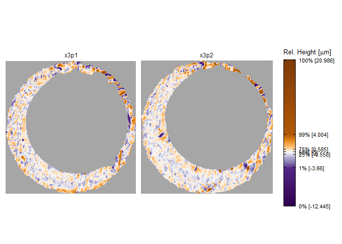
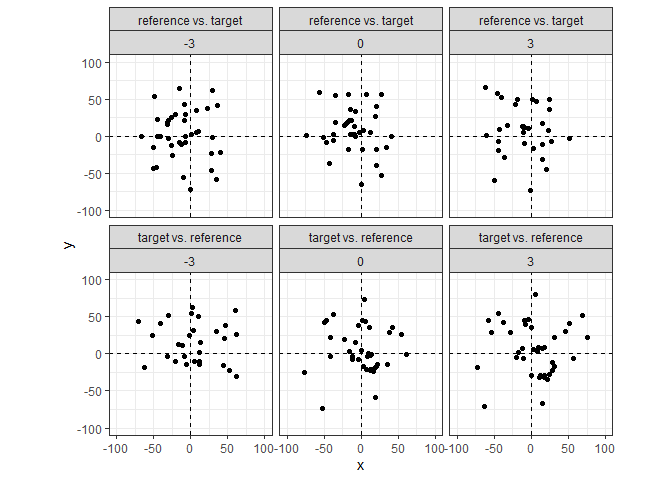

An R package to compare cartridge cases and compute similarity scores based on their breech face impressions.
Installation
You can install the development version of scored from GitHub with:
# install.packages("devtools")
devtools::install_github("jzemmels/scored")Feature Calculation
As an example, consider two cartridge cases fired from the same Ruger SR9 semiautomatic 9-mm handgun. Learn more about the collection of these cartridge cases here. The cartridge cases are uniquely identified as “K013sA1” and “K013sA2.” We assume that the markings on these cartridge cases left by the handgun during the firing process are similar.
Below is a visual of the two cartridge case scans. Note that these
scans have already undergone some preprocessing to emphasize the breech
face impression markings. The similarity between these cartridge cases
is not immediately apparent. We can calculate similarity features
between these two scans using functions available in the
scored package.
x3pPlot(K013sA1,K013sA2)
First, we compare the two scans using the cell-based comparison
procedure implemented in the cmcR R package. Briefly, this
cell-based comparison involves dividing one scan into a grid of “cells”
and identifying the rotation/translation at which each cell aligns best
in the other scan. This comparison is repeated in both directions:
K013sA1 is divided into cells that are compared to K013sA2, and then
K013sA2 is divided into cells that are compared to K013sA1. The
resulting comparisonData data frame contains features
related to the alignment of each cell in the other scan. By itself, the
features in comparisonData are quite noisy – it’s difficult
to measure the similarity between K013sA1 and K013sA2. The
scored package contains functions that accept the
comparisonData features as input and return more
informative similarity features.
comparisonData <- comparison_cellBased(reference = K013sA1,target = K013sA2,
thetas = seq(-30,30,by = 3),
returnX3Ps = FALSE)
comparisonData
#> # A tibble: 1,638 x 10
#> cellIndex x y fft_ccf pairwis~1 theta refMi~2 targM~3 joint~4 direc~5
#> <chr> <dbl> <dbl> <dbl> <dbl> <dbl> <dbl> <dbl> <dbl> <chr>
#> 1 1, 2 24 -26 0.136 0.506 -30 2454 18481 2275 refere~
#> 2 1, 3 72 -37 0.148 0.388 -30 1150 16152 1109 refere~
#> 3 1, 4 -58 6 0.116 0.204 -30 1103 16846 531 refere~
#> 4 1, 5 -69 -25 0.209 0.431 -30 1450 19207 1351 refere~
#> 5 1, 6 -25 -13 0.294 0.519 -30 1751 21076 1336 refere~
#> 6 1, 7 33 15 0.234 0.483 -30 2401 22759 2101 refere~
#> 7 2, 1 -25 -49 0.161 0.550 -30 2498 17790 99 refere~
#> 8 2, 2 6 -63 0.134 0.176 -30 378 13973 54 refere~
#> 9 2, 3 40 8 0.174 0.602 -30 1912 13375 0 refere~
#> 10 2, 7 49 28 0.229 0.536 -30 2086 22466 1624 refere~
#> # ... with 1,628 more rows, and abbreviated variable names 1: pairwiseCompCor,
#> # 2: refMissingCount, 3: targMissingCount, 4: jointlyMissing, 5: direction
#> # i Use `print(n = ...)` to see more rowsRegistration-based Features
Briefly, the registration-based features are calculated using the estimated alignment data from the comparison procedure. For truly matching cartridge cases, we expect that cells from one scan will tend to “agree” on a particular alignment (comprised of a rotation + translation) at which they match the other scan. We measure how well a cell “matches” to the other scan by considering the rotation/translation at which the cross-correlation function (CCF) is maximized. A higher CCF value corresponds to higher similarity. For truly matching cartridge cases, we expect that the rotation/translation that maximize the CCF for each cell will be close to one another (low variability). We also expect the CCF to be large, on average.
The feature_registration_all() function calculates seven
registration-based features based on these expectations.
comparisonData %>%
feature_registration_all()
#> # A tibble: 1 x 7
#> ccfMean ccfSD pairwiseCompCorMean pairwiseCompCorSD xTransSD yTransSD theta~1
#> <dbl> <dbl> <dbl> <dbl> <dbl> <dbl> <dbl>
#> 1 0.275 0.0853 0.546 0.151 35.7 32.3 17.1
#> # ... with abbreviated variable name 1: thetaRotSDWe can calculate the same type of features, but this time based on a comparison of the full scans to each other. That is, instead of dividing the scans into a grid of cells and estimating the alignment for each cell, we determine the translation/rotation that maximizes CCF between the full scans. We expect the correlation to be large if the two scans are truly matching.
comparisonDat_fullScan <- comparison_fullScan(K013sA1,K013sA2,returnX3Ps = FALSE)
comparisonDat_fullScan %>%
feature_registration_all() %>%
select(ccfMean,pairwiseCompCorMean)
#> # A tibble: 1 x 2
#> ccfMean pairwiseCompCorMean
#> <dbl> <dbl>
#> 1 0.271 0.405Density-based Features
We re-iterate an expectation here for emphasis: we expect that cells from one scan will tend to “agree” on a particular alignment (comprised of a rotation + translation) at which they match the other scan. The registration-based features rely on the CCF to measure how well a cell/scan “matches” to another scan and considers the distribution of features at which the CCF is maximized.
We can consider the notion of cell “agreement” through a different
lens: considering just the estimated registration values, are there
regions in rotation/translation, , space where multiple cells
seem to “bunch up?” The plot below shows the estimated translations per
cell across three rotation angles,
, and both
comparison directions. Note that the points in the “reference
vs. target” direction appear to bunch-up around
and
. Conversely, the
points in the “target vs. reference” direction bunch-up around
and
. This provides
evidence that the scans are matching in two ways: (1) multiple cells in
both directions “agree” on a particular rotation/translation and (2) the
agreed-upon rotation/translation are opposites of each other between the
two comparison directions.
comparisonData %>%
filter(theta >= -3 & theta <= 3) %>%
ggplot(aes(x=x,y=y)) +
geom_jitter() +
facet_wrap(direction~theta,nrow = 2) +
xlim(c(-100,100)) +
ylim(c(-100,100)) +
coord_fixed() +
theme_bw() +
geom_vline(xintercept = 0,linetype = "dashed") +
geom_hline(yintercept = 0,linetype = "dashed") 
The notion of “agreement” is formalized using the point
density. The feature_densityBased_all function
calculates three features related to the number of cells that agree upon
a particular rotation/translation and whether the estimation
rotations/translations are opposites of each other between the two
comparison directions.
comparisonData %>%
feature_densityBased_all(eps = 5,minPts = 5)
#> # A tibble: 1 x 3
#> thetaDiff translationDiff clusterSize
#> <dbl> <dbl> <dbl>
#> 1 0 1.16 11Visual Diagnostic-based Features
comparisonDat_fullScan_estimRotation <- comparison_fullScan(K013sA1,K013sA2,
returnX3Ps = TRUE,
thetas = -3)
comparisonDat_fullScan_estimRotation %>%
group_by(cellIndex,direction) %>%
feature_visualDiagnostic_all()
#> # A tibble: 2 x 8
#> # Groups: cellIndex [1]
#> cellIndex direction neigh~1 neigh~2 neigh~3 neigh~4 diffe~5 diffe~6
#> <chr> <chr> <dbl> <dbl> <dbl> <dbl> <dbl> <dbl>
#> 1 1, 1 reference vs. target 74.8 NA 887. NA -0.0343 NA
#> 2 1, 1 target vs. reference 96.4 NA 824. NA 0.0876 NA
#> # ... with abbreviated variable names 1: neighborhoodSizeAve_ave,
#> # 2: neighborhoodSizeAve_sd, 3: neighborhoodSizeSD_ave,
#> # 4: neighborhoodSizeSD_sd, 5: differenceCor_ave, 6: differenceCor_sd